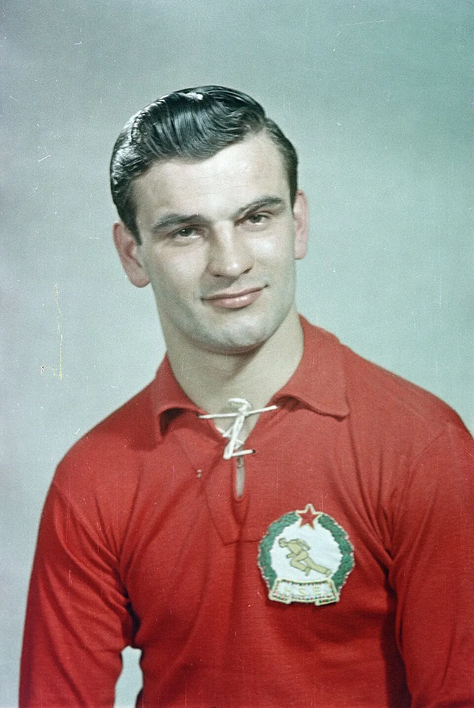

The profile
Sándor Kocsis
Sándor Kocsis was born in Budapest and developed in Hungarian football during the 1940s. His rise at Ferencváros preceded his place in the celebrated Honvéd and national-team attacks.
He was a prolific forward for Honvéd before moving to Barcelona. His timing in the air made him a particular threat from crosses, but he also finished sharply on the ground. He formed part of Hungary's flexible attack alongside Ferenc Puskás and other technically gifted forwards.
Kocsis scored 11 goals at the 1954 World Cup, helping Hungary reach the final unbeaten. His goals included decisive contributions in difficult knockout matches, and he finished as the tournament's leading scorer. He did not score in the final defeat to West Germany, but his tournament-long finishing was one of the main reasons Hungary had reached that stage.
1954Switzerland
Runner-up
Group B Hungary9 : 0South Korea
- Ferenc PUSKAS12′
- Mihaly LANTOS18′
- Sandor KOCSIS24′
- Sandor KOCSIS36′
- Sandor KOCSIS50′
- Zoltan CZIBOR59′
- Peter PALOTAS75′
- Peter PALOTAS83′
- Ferenc PUSKAS89′
Hungaryhome
Starting lineup
- Gyula GROSICS
- Jeno BUZANSZKY
- Mihaly LANTOS
- Gyula LORANT
- Jozsef BOZSIK
- Ferenc SZOJKA
- Sandor KOCSIS
- Ferenc PUSKAS
- Zoltan CZIBOR
- Laszlo BUDAI
- Peter PALOTAS
Substitutions
- No substitutions
South Koreaaway
Starting lineup
- HONG Dook Jong
- PARK Kyu Chong
- PARK Yae Seung
- MIN Byung Dae
- KANG Chang Gi
- CHUNG Nam Sik
- CHU Yung Kwang
- CHOI Chung Min
- WOO Sang Kwon
- SUNG Nak Woon
- PARK Il Kap
Substitutions
- No substitutions
Group B Hungary8 : 3West Germany
- Sandor KOCSIS3′
- Ferenc PUSKAS17′
- Sandor KOCSIS21′
- Nandor HIDEGKUTI52′
- Nandor HIDEGKUTI54′
- Sandor KOCSIS69′
- Jozsef TOTH75′
- Sandor KOCSIS78′
- Alfred PFAFF25′
- Helmut RAHN77′
- Richard HERRMANN84′
Hungaryhome
Starting lineup
- Gyula GROSICS
- Jeno BUZANSZKY
- Mihaly LANTOS
- Gyula LORANT
- Jozsef BOZSIK
- Jozsef ZAKARIAS
- Jozsef TOTH
- Sandor KOCSIS
- Nandor HIDEGKUTI
- Ferenc PUSKAS
- Zoltan CZIBOR
Substitutions
- No substitutions
West Germanyaway
Starting lineup
- Heinz KWIATKOWSKI
- Werner KOHLMEYER
- Hans BAUER
- Jupp POSIPAL
- Werner LIEBRICH
- Paul MEBUS
- Fritz WALTER
- Horst ECKEL
- Helmut RAHN
- Richard HERRMANN
- Alfred PFAFF
Substitutions
- No substitutions
Quarter-final Hungary4 : 2Brazil
- Nandor HIDEGKUTI4′
- Sandor KOCSIS7′
- Mihaly LANTOS60′ · pen.
- Sandor KOCSIS88′
- DJALMA SANTOS18′ · pen.
- JULINHO65′
Hungaryhome
Starting lineup
- Gyula GROSICS
- Jeno BUZANSZKY
- Mihaly LANTOS
- Gyula LORANT
- Jozsef BOZSIK
- Jozsef ZAKARIAS
- Jozsef TOTH
- Sandor KOCSIS
- Nandor HIDEGKUTI
- Zoltan CZIBOR
- Mihaly TOTH
Substitutions
- No substitutions
Brazilaway
Starting lineup
- CASTILHO
- DJALMA SANTOS
- NILTON SANTOS
- BRANDAOZINHO
- BAUER
- PINHEIRO
- DIDI
- JULINHO
- MAURINHO
- HUMBERTO
- INDIO
Substitutions
- No substitutions
Semi-final Hungary4 : 2Uruguay
- Zoltan CZIBOR12′
- Nandor HIDEGKUTI47′
- Sandor KOCSIS109′
- Sandor KOCSIS116′
- Juan HOHBERG75′
- Juan HOHBERG86′
Hungaryhome
Starting lineup
- Gyula GROSICS
- Jeno BUZANSZKY
- Mihaly LANTOS
- Gyula LORANT
- Jozsef BOZSIK
- Jozsef ZAKARIAS
- Sandor KOCSIS
- Nandor HIDEGKUTI
- Zoltan CZIBOR
- Laszlo BUDAI
- Peter PALOTAS
Substitutions
- No substitutions
Uruguayaway
Starting lineup
- Roque MASPOLI
- Jose SANTAMARIA
- William MARTINEZ
- Victor RODRIGUEZ ANDRADE
- Nestor CARBALLO
- Luis CRUZ
- Juan HOHBERG
- Juan SCHIAFFINO
- Carlos BORGES
- Rafael SOUTO
- Javier AMBROIS
Substitutions
- No substitutions
Final West Germany3 : 2Hungary
- Max MORLOCK10′
- Helmut RAHN18′
- Helmut RAHN84′
- Ferenc PUSKAS6′
- Zoltan CZIBOR8′
West Germanyhome
Starting lineup
- Toni TUREK
- Werner KOHLMEYER
- Jupp POSIPAL
- Werner LIEBRICH
- Karl MAI
- Fritz WALTER
- Horst ECKEL
- Helmut RAHN
- Max MORLOCK
- Ottmar WALTER
- Hans SCHAEFER
Substitutions
- No substitutions
Hungaryaway
Starting lineup
- Gyula GROSICS
- Jeno BUZANSZKY
- Mihaly LANTOS
- Gyula LORANT
- Jozsef BOZSIK
- Jozsef ZAKARIAS
- Sandor KOCSIS
- Nandor HIDEGKUTI
- Ferenc PUSKAS
- Zoltan CZIBOR
- Mihaly TOTH
Substitutions
- No substitutions